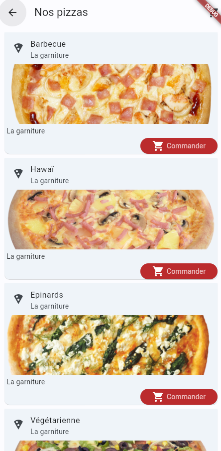

Fiche Explicative Projet Pizzeria
Objectif : Application pour une pizzeria
Description
Dans le cadre de mon BTS SIO option SLAM, j'ai développé une application mobile nommée ‘Pizzeria’ en utilisant Flutter et Dart. Conçue pour s'adapter à toutes les tailles de smartphones, cette application propose une solution complète pour la gestion de la vente de pizzas. Elle permet aux utilisateurs de consulter les produits disponibles, de passer des commandes et d'effectuer des paiements simulés.
Fonctionnalités principales
- Adaptabilité : Interface utilisateur responsive qui s'adapte à toutes les tailles de smartphones, garantissant une expérience utilisateur optimale sur tous les appareils.
- Gestion des stocks : Visualisation en temps réel des produits disponibles en stock, facilitant la gestion des ingrédients et des pizzas disponibles à la vente.
- Commande en ligne : Possibilité pour les utilisateurs de passer des commandes de pizzas directement depuis l'application, avec une interface simple et intuitive.
- Paiement fictif : Système de paiement intégré permettant de simuler des transactions, offrant une expérience complète de commande sans transactions financières réelles.
- Historique des commandes : Suivi des commandes passées pour une meilleure gestion et un service client amélioré.
Technologies utilisées
- Langage de programmation : Dart
- Framework : Flutter pour le développement multiplateforme
Objectifs pédagogiques
Ce projet m'a permis de développer mes compétences en développement mobile avec Flutter et Dart, notamment dans les domaines suivants :
- Création d'interfaces utilisateur adaptatives et responsives.
- Intégration et gestion de bases de données pour le suivi des stocks et des commandes.
- Gestion des états et des interactions utilisateur en temps réel.
- Développement d'une application mobile complète, de la conception à l'implémentation.
Perspectives d'amélioration
- Ajout de fonctionnalités de personnalisation des pizzas, permettant aux utilisateurs de choisir les ingrédients.
- Intégration d'un système de notifications pour informer les utilisateurs des promotions ou de l'état de leur commande.
- Amélioration du système de paiement pour inclure des options de paiement réelles et sécurisées.
- Développement de versions pour d'autres plateformes, comme iOS et le web.
Déploiement
Afin de pouvoir assurer un rendu de toutes les tâches demandées, j’ai réalisé un Trello sur lequel j’ai ajouté toutes les missions. J’ai donc planifié les activités pour finir mon projet ‘Pizzeria’.
